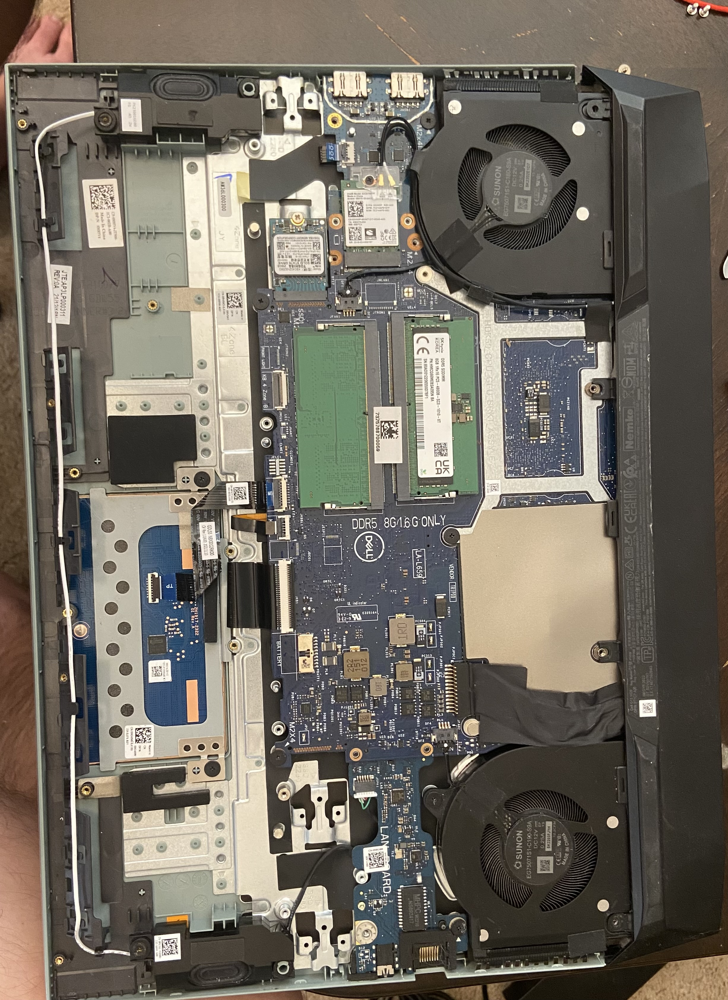

Home Lab Server / NAS from Repurposed Laptop Hardware
Built a practical Ubuntu home lab server from old laptop parts, switched from CasaOS to Webmin for more direct administration, and configured Samba-based shared storage with client-side Windows access.